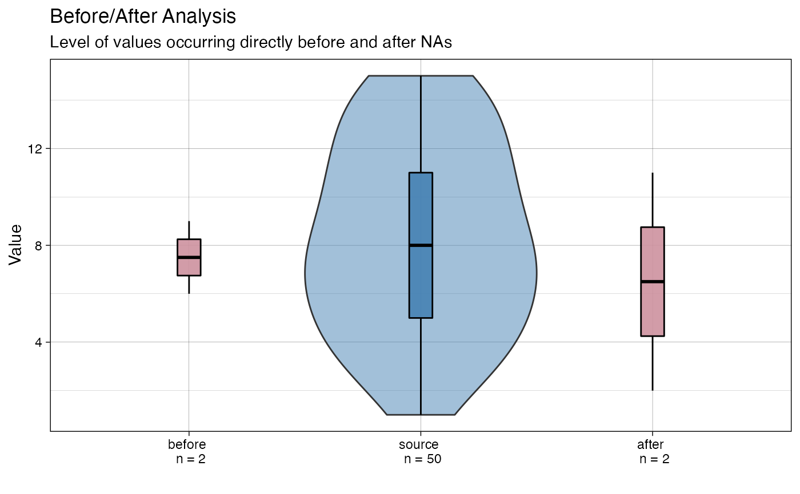
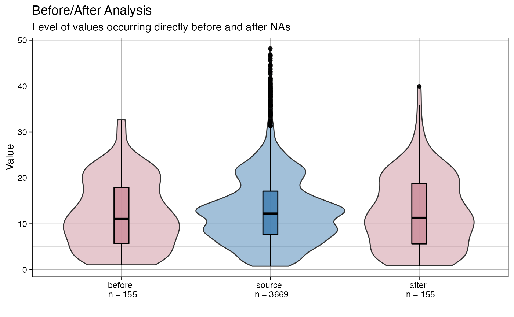
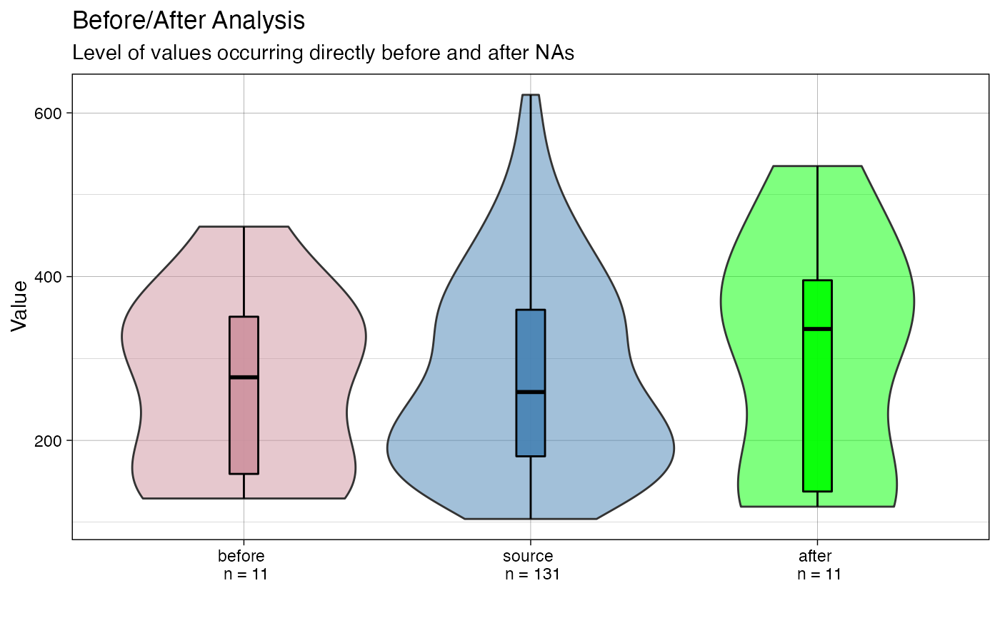
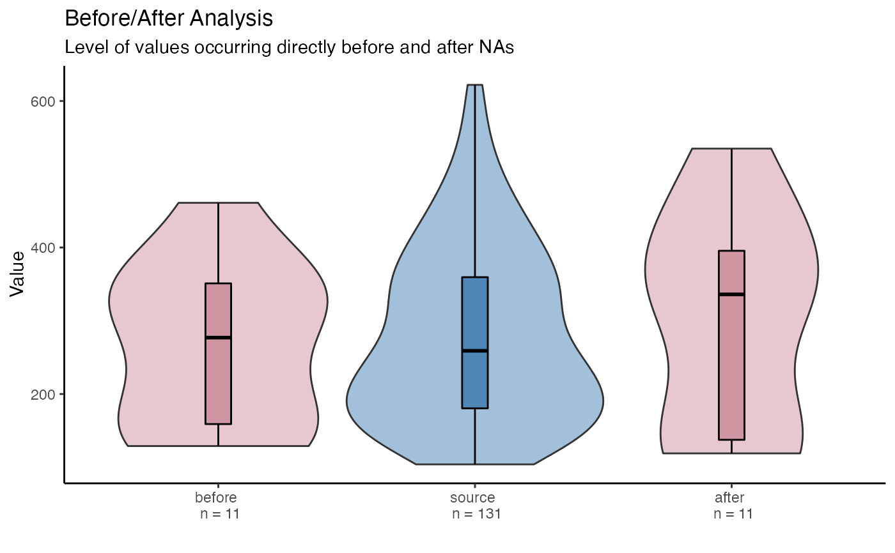
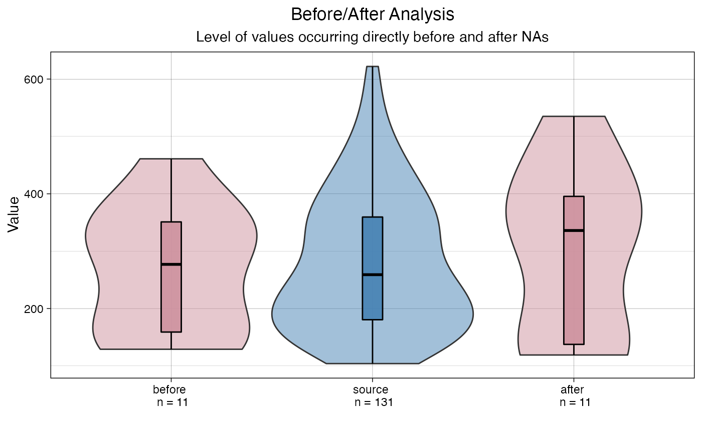
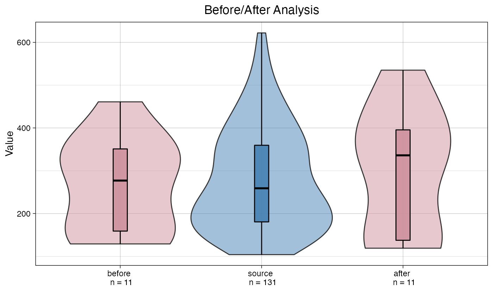
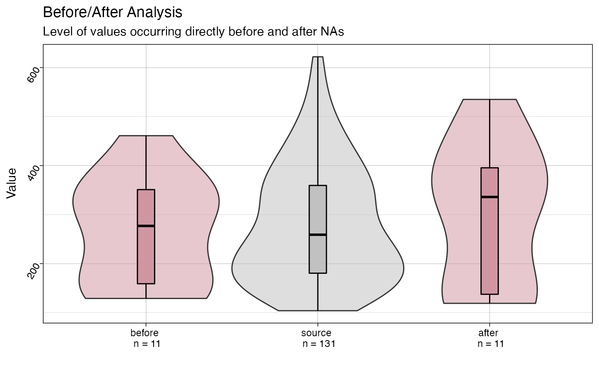

R/ggplot_na_level2.R
ggplot_na_level2.RdVisualize the distribution of values directly before/after NAs via violin plots. Useful to determine if missing values appear more often when a certain threshold level is reached.
ggplot_na_level2( x, inside_information = "boxplot", color_before = "pink3", color_after = "pink3", color_source = "steelblue", color_inside = "black", alpha_violin = 0.5, alpha_inside = 0.9, title = "Before/After Analysis", subtitle = "Level of values occurring directly before and after NAs", xlab = "", ylab = "Value", legend = FALSE, orientation = "vertical", label_before = "before", label_after = "after", label_source = "source", add_n_label = T, theme = ggplot2::theme_linedraw() )
| x | Numeric Vector ( |
|---|---|
| inside_information | Defines what is inside the violin as an additional distribution visualization. Accepts the following input:
Beware, though using jitter option "points" can lead to overlays for larger time series. |
| color_before | Color to fill the violin representing observations directly before NA gaps. |
| color_after | Color to fill the violin representing observations directly after NA gaps. |
| color_source | Color to fill the violin representing the distribution of all non-NA values of a time series. |
| color_inside | Color used for the inside information (color of boxplot border or color of points). |
| alpha_violin | Alpha ((transparency) value used for the violin. |
| alpha_inside | Alpha (transparency) value used for the inside information in the violin (boxplot, points). |
| title | Title of the plot (NULL for deactivating title). |
| subtitle | Subtitle of the plot (NULL for deactivating subtitle). |
| xlab | Label for x-Axis. |
| ylab | Label for y-Axis. |
| legend | If TRUE a legend is added at the bottom. |
| orientation | Can be either 'vertical' or 'horizontal'. Defines if the violin plot is oriented vertically or horizontally. |
| label_before | Defines the label assigned to the violin for values directly before NAs. |
| label_after | Defines the label assigned to the violin for values directly after NAs. |
| label_source | Defines the label assigned to the violin for the distribution of all values. |
| add_n_label | Whether to automatically additionally add a n-value (e.g. n = 100) to the labels as an indication how many observations are represented by the violins. |
| theme | Set a Theme for ggplot2. Default is ggplot2::theme_linedraw().
( |
This function visualizes the distribution of missing values directly before/after NAs via violin plots. This is useful to determine if missing values appear more often when near to a certain value level.
As described in geom_violin: 'A violin plot is a compact display of a continuous distribution. A violin plot is a mirrored density plot displayed in the same way as a boxplot.'
The visualization of the before/after NA distributions in comparison to the overall distribution can provide information about the root cause of the missing values. It also can provide indications, about the missing data mechanism (MCAR,MAR, MNAR).
The default plot consists of three violins/boplots combinations - one for all values directly before NAs, one for all values directly after NAs and one for the overall distribution of all non-NA values.
By looking at these plots it can be seen whether the NAs appear rather randomly after some values in the overall distribution or if e.g. it can be said NAs more likely appear after high values.
It could, for example be the case, that a sensor can't measure values above 100 degree and always outputs NA values once the temperature reaches 100 degree. With these plots it could be realized, that NAs in the next value always occur when the temperature is close to 100 degree.
Some more technical implementation details:
The middle violin with the distribution of all non-NA observations also includes the values directly before/after the NAs.
Only the values directly before and after the NA gap are used for the before/after violins.
For the example series 6, 2, NA, NA, NA, 3, 6 this would mean:
The 2 value goes into the before distribution
The 3 value goes into the after distribution
Both 6 are not in before or after, since only values directly before or after the gaps are considered
No extra values added to before/after as representatives for the middle NAs
So the source/overall distribution for this series would be {6, 2, 3, 6} the before {2} and after {6}.
Of course the overall plot only makes sense with a longer time series with more missing values.
The only really needed parameter for this function is x (the univariate time series that shall be visualized). All other parameters are solely for altering the appearance of the plot.
As long as the input is univariate and numeric, the function also takes data.frame, tibble, tsibble, zoo, xts as an input.
The plot can be adjusted to your needs via the function parameters. Additionally, for more complex adjustments, the output can also be adjusted via ggplot2 syntax. This is possible, since the output of the function is a ggplot2 object. Also take a look at the Examples to see how adjustments are made.
Steffen Moritz
# Example 1: Visualize the before/after NA distributions x <- stats::ts(c(1:11, 4:9, NA, NA, NA, 11:15, 7:15, 15:6, NA, NA, 2:5, 3:7)) ggplot_na_level2(x)# Example 2: Visualize the before/after NA distributions in tsNH4 time series ggplot_na_level2(tsNH4)# Example 3: Same as example 1, just written with pipe operator x <- ts(c(1:11, 4:9, NA, NA, NA, 11:15, 7:15, 15:6, NA, NA, 2:5, 3:7)) x %>% ggplot_na_level2()# Example 4: Visualize the before/after NA in tsAirgap - different color for violins # Plot adjustments via ggplot_na_level2 function parameters ggplot_na_level2(tsAirgap, color_after = "green")# Example 5: Visualize before/after NA in tsAirgap - different theme # Plot adjustments via ggplot_na_level2 function parameters ggplot_na_level2(tsAirgap, theme = ggplot2::theme_classic())# Example 6: Visualize before/after NA in tsNH4 - title, subtitle in center # Plot adjustments via ggplot2 syntax ggplot_na_level2(tsAirgap) + ggplot2::theme(plot.title = ggplot2::element_text(hjust = 0.5)) + ggplot2::theme(plot.subtitle = ggplot2::element_text(hjust = 0.5))# Example 7: Visualize before/after NA in tsAirgap - title in center, no subtitle # Plot adjustments via ggplot2 syntax and function parameters ggplot_na_level2(tsAirgap, subtitle = NULL) + ggplot2::theme(plot.title = ggplot2::element_text(hjust = 0.5))# Example 8: Visualize before/after NA in tsAirgap - y-axis texts with angle # Plot adjustments via ggplot2 syntax and function parameters ggplot_na_level2(tsAirgap, color_source = "grey") + ggplot2::theme(axis.text.y = ggplot2::element_text(angle = 60, hjust = 1))